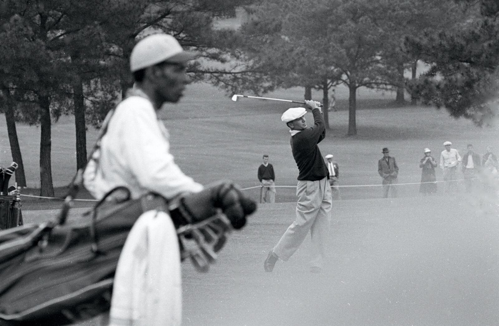
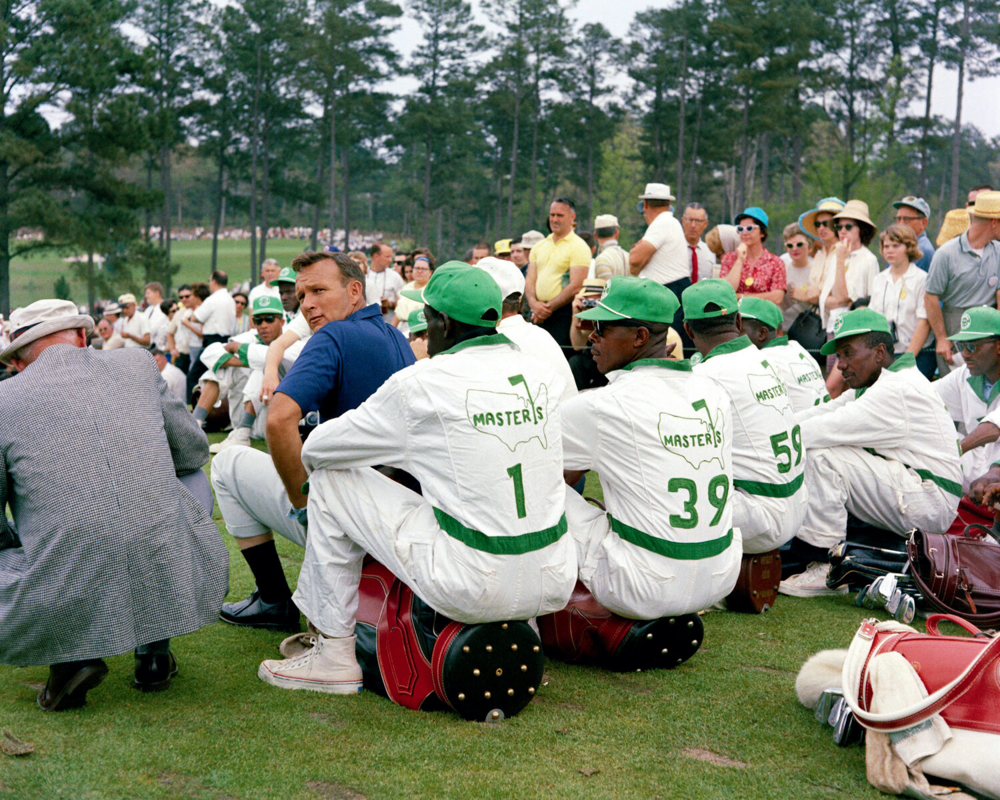
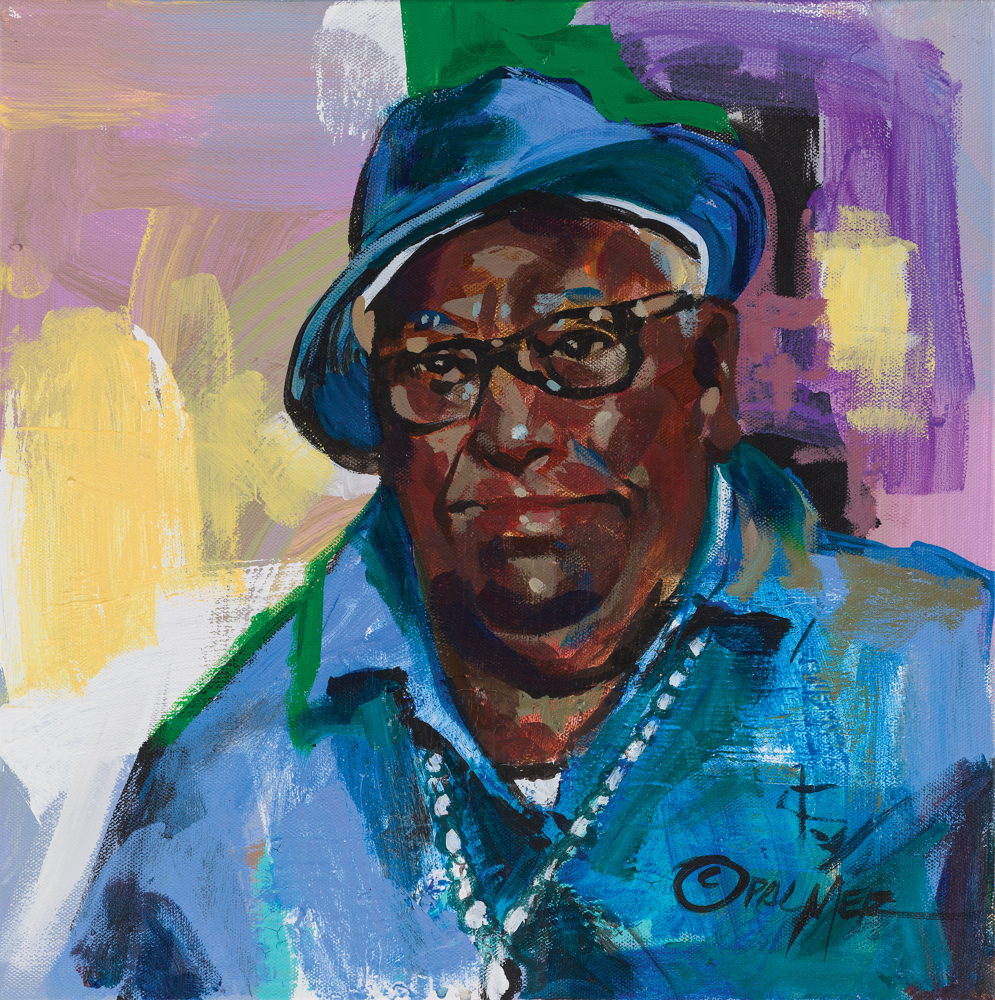
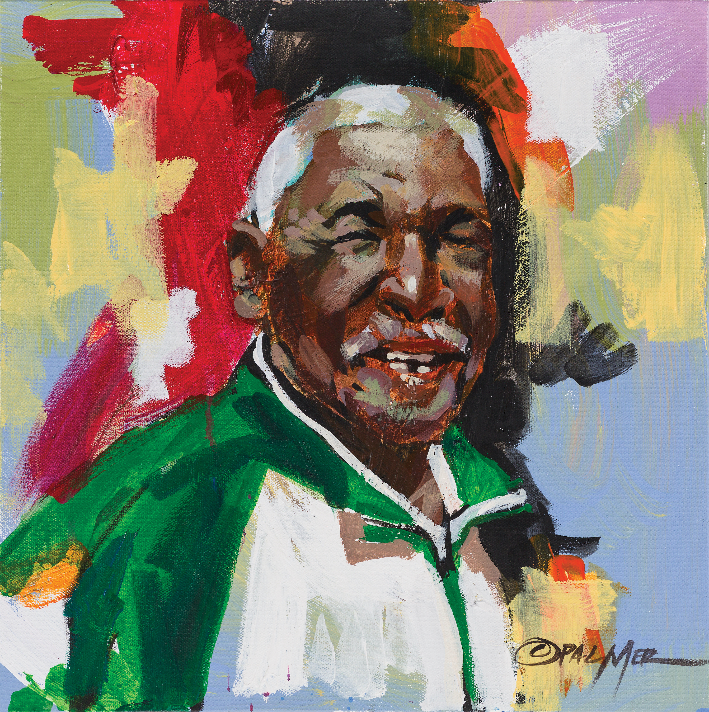

The Black Caddies of Augusta National
For decades, the Professional Golfers' Association (PGA) tournament at Augusta National Golf Club was defined not just by the legendary players who wore the green jacket, but by the Black caddies who carried their bags, read the breaks on tricky greens, and paved an unheralded path through golf history.

Long before integration reached the broader professional circuit, Augusta National relied exclusively on local Black men from Augusta, Georgia, to loop for the world's greatest golfers. These caddies possessed an encyclopedic, generational knowledge of the course's contours.

"They weren't just carrying clubs; they were walking libraries of course knowledge, strategy, and resilience."
Legends like Carl Jackson, who caddied in more than fifty Masters tournaments, formed legendary partnerships with champions like Ben Crenshaw. Their stories embody the hidden labor and deep dedication that built the tournament's legacy.

Though change eventually came to the caddy ranks—giving way to players bringing their own professional caddies in the 1980s—the legacy of the Augusta National caddies remains an essential pillar of golf history.
